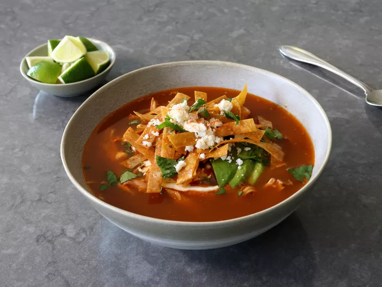

Chef John’s Chicken Tortilla Soup

Description
Just when you think you’ve posted a video for every single world-famous,
iconic chicken soup there is, someone asks for chicken tortilla, and you
realize you haven’t. Seriously, what list of the greatest chicken soups of
all time would not include this?
If there were a Mount Rushmore for chicken soups, this is on it. Although,
I’m guessing carving a bowl of soup into a rock mountain face would be a
lot tougher than a face. Anyway, the point is, this is a really good soup.
I hope you find the time to make it from scratch, but if you don’t, you’ll
still be able to experience most of the awesomeness. If you use some
high-quality chicken broth, and find some not-terribly-dry cooked chicken,
you should be in decent shape. We’ll even let you break up some
store-bought tortilla chips to finish the soup if you have to, but it’s so
much better if you make your own crispy noodle-like strips.
Either way, this is a bucket-list chicken soup, and I really do hope you
give it a try soon. Enjoy!
Ingredients
- 1 (4 1/2 pound) whole chicken
- 3 white onions, halved, divided
- 1 bunch cilantro, rinsed well
- 2 bay leaves
- 1/2 teaspoon whole black peppercorns
- 1 teaspoon Mexican oregano
- 2 dried chili pepper pods, seeded (optional)
- 3 quarts water
Steps
-
Combine chicken, 1 onion, stems from the cilantro bunch, bay leaves,
oregano, peppercorns, dried chili pods, and 3 quarts of water in a large
soup pot set over medium-high heat. Bring to simmer, lower heat to
medium-low, and simmer for 1 hour.
-
Meanwhile, make the tortilla strips: Preheat the oven to 350 degrees F
(180 degrees C). Line a baking sheet with a silicone mat or parchment
paper.
-
Cut tortillas in half, and then cut crosswise into 1/4-inch strips.
Transfer tortilla strips to the prepared baking sheet and drizzle with
oil. Add salt and toss well to coat, then spread strips out as evenly as
possible.
-
Bake in the preheated oven until golden brown and crispy, tossing once
or twice during the cooking time, about 30 minutes. Set aside.
- Carefully remove chicken to a bowl. Reduce heat on broth to low.
-
Let chicken rest until cool enough to pull off the meat. Shred chicken
and refrigerate until needed.
-
Add bones, skin, and all the scraps back to the pot of broth, and simmer
on low heat for about 4 hours total. If broth reduces too much, just add
a splash of water.
-
Meanwhile, after about 2 hours, make the charred vegetable salsa:
Preheat on the oven’s broiler for high heat and set a rack about 8
inches below the heating element. Line a baking sheet with foil and oil
lightly; place remaining 2 onions, tomatoes, sweet red pepper, and
jalapeno pepper on the prepared baking sheet.
-
Broil vegetables until charred, 7 to 10 minutes. Add charred vegetables
to the jar of a blender with garlic cloves, chipotle pepper, and 1 cup
water, and blend until smooth.
-
Pour pureed salsa into the pot, and raise heat to medium-low. Simmer
broth for another 2 hours, stirring occasionally. Pass soup through a
fine mesh strainer into a separate pot, squeezing the chicken to get all
those nice juices; discard bones and skin in strainer. Season soup to
taste with salt.
-
Add cumin, shredded chicken, and juice from 1 lime. Simmer 15 to 30
minutes, stirring occasionally. Taste for seasoning, and serve with
crispy tortilla strips. Garnish with sour cream, avocado, chopped
cilantro, grated or crumbled Mexican cheese, additional lime juice, and
a sprinkle of cayenne, if desired.